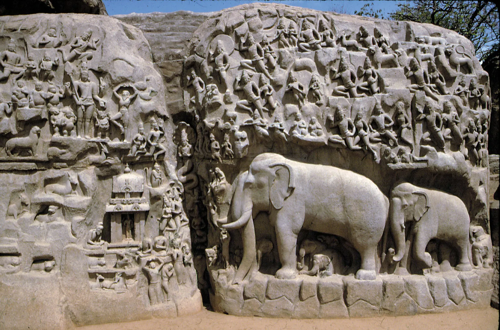
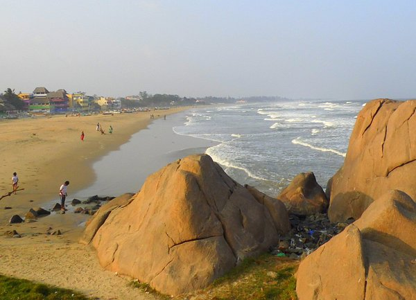
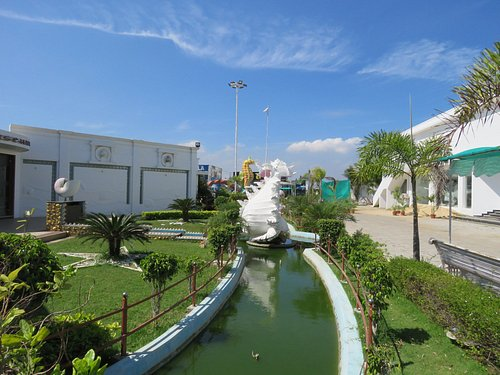
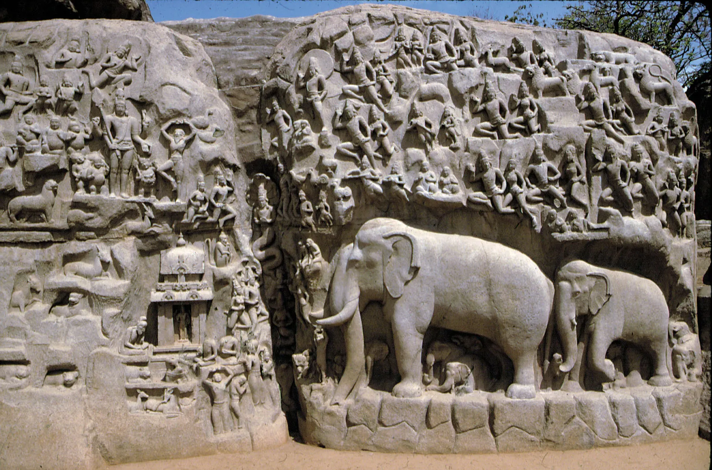
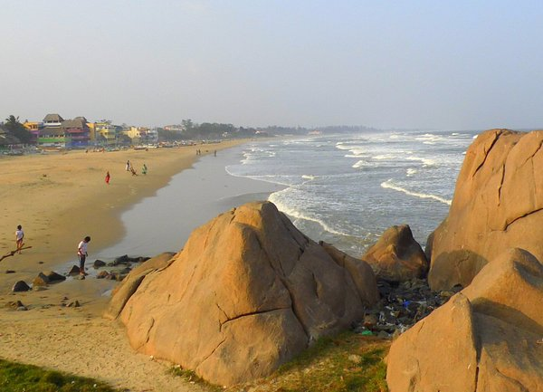
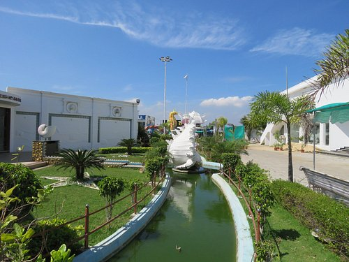

Mahabalipuram Temple
Mahabalipuram, also known as Mamallapuram, is a historic town located in the southeastern Indian state of Tamil Nadu on the Coromandel Coast, facing the Bay of Bengal. It is renowned for its ancient rock-cut temples and monolithic sculptures, which are some of the finest examples of Dravidian art and architecture in India. This coastal town is a UNESCO World Heritage Site, attracting visitors from all over the world who come to explore its rich artistic and cultural heritage. Mahabalipuram was a thriving seaport during the reign of the Pallava dynasty, which ruled South India from the 3rd to 9th centuries AD. The town was an important center for trade and maritime activities, and it served as a second capital for the Pallavas, who ruled from Kanchipuram. The Shore Temple, Pancha Rathas (Five Chariots), and Arjuna’s Penance are among the most famous monuments in Mahabalipuram, showcasing the artistic prowess of the Pallavas. The town is also significant for being the birthplace of Boothathalvar, one of the first three Alvars, who were Tamil poet-saints devoted to Vishnu. Mahabalipuram has shrines dedicated to both Saivism and Vaishnavism, reflecting the religious diversity of the Pallava period. Although formal worship is no longer conducted, the town remains a major tourist attraction due to its architectural marvels and its historical significance. Known for its towering gopurams, intricate carvings, and spiritual aura, the temple attracts thousands of devotees and tourists daily. The temple complex is spread across 14 acres and is an excellent example of Dravidian architecture.
 




